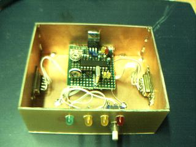
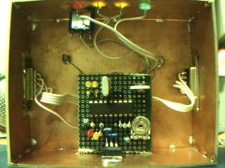
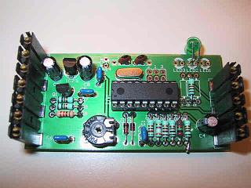

|
APRS Tracker is a firmware for APRS beacons based on a PIC processor such
as the well known Tinytrak.
(Version 0.7 supported both the PIC16F84 as the PIC16F6xx, version 0.8 only
works with the PIC16F628 or PIC16F648).
It is distributed under the GNU GPL.


Some images of my own home-build tracker
This software is also used for the
KF161-Tracker,
a tracker that can be build into a Bosch KF161 instead of the tone unit.

KF161-Tracker
There are several reasons why I wrote this firmware instead of using one
of the hex files available on the web.
I have a GPS receiver that outputs GPGGA messages and wanted a Tinytrak that
could use them. I also wanted to build it myself and experiment with it.
Experimentation is the most important aspect of my hobby and as
such I want to be able to not only use my tracker but also to change it as
I like.
This is also the reason I published it under the GPL, I want others to be
able to continue to experiment and learn from my experience and I can again
learn from theirs.
While searching for tinytrak sourcecode I did found a project called SOTT
(Son of TinyTrak) by Michael Pendley K5ATM.
Unfortunatly it also didn't understand GPGGA sentences and it was written
for a very specific compiler I did not have access to.
I decided not to port the code but to start over myself and use Michaels
comments as a guide.
|
|
The current version is version 0.8:
- understands GPGGA and GPVTG sentences
- does smartbeaconing (0.8 has improved smartbeaconing)
- autodetects serial polarity (RS232 or TTL)
- has 4800 and 9600 Baud support
- is configurable via a serial null-modem cable
Included is a config program for linux, please don't ask for a windows
tool, I won't make it (if anyone really wants it it is not that hard to
do yourself)
Ok, so not everyboddy uses Linux yet... below you can download a
floppy image I made with a menu controlled version of the config tool
- reports course and speed
- includes altitude reporting
- Works with PIC16F84, PIC16F627, PIC16F628 and PIC16F648 controllers.
The digipeater path has a default of RELAY WIDE2-2, this should be enough
for normal use. Please think carefully before changing it!!!!!!
(In fact changing it isn't even implemented in the current config tool :)
aprstracker-0.8.tar.gz
aprstracker-0.7.tar.gz
|
|
atprogram.dsk is a floppy image containing a
linux kernel and the config tool. Write this file to a floppy disk with
a tool such as
rawwrite and boot your computer with it. (It needs atleast a 386)
For the curious: The disk image contains a linux 2.4.20 kernel with just
about everything stripped out and a modified atprogram (with some basic menu)
compiled against dietlibc.
The programming protocol is relativly simple, connect a serial cross cable
to the tracker on the gps port.
To put the tracker in programming mode send the '!' character.
The tracker will report itself with 'AT' followed by two version bytes.
The first version byte is the firmware version, the second the ROM map version
(All firmware versions with the same ROM map version number look the same
to the programmer.)
When in programming mode you can read and write the 64 bytes of internal
eeprom memmory with the read command ('R' followed by the address, the
tracker responds with one byte) and the write command ('W' followed
by the address and the to be written byte, tracker responds with the data
written).
Any other character than 'R' and 'W' will return the tracker in normal
operating mode.
This is the layout of the version 2 ROM map:
| address | content |
|---|
| 0x00 - 0x06
|
Destination address in AX.25 address format
|
| 0x07 - 0x0d
|
Source address in AX.25 address format
|
| 0x0e - 0x1b
|
Digipeater fields in AX.25 address format
This field is terminated by setting bit0 of the last byte of the last
digipeater address.
(As one might have noticed the source, destination and digipeater
fields are transmitted by the transmitter without modification)
|
| 0x1c |
Beacon interval in minutes
|
| 0x1d |
Tx delay, measured in flags (about 0.8ms)
|
| 0x1e |
Symbol table
|
| 0x1f |
Symbol id
|
| 0x20 - 0x47 |
Null terminated comment text
|
| 0x48 |
Minumum threshold for corner pegging (degrees)
|
| 0x49 |
Threshold slope for corner pegging (degrees/knot)
|
| 0x4a |
Time between other beacon & turn beacon (secs)
|
| 0x4b |
Fast beacon rate (secs)
|
| 0x4c |
Slow beacon rate (mins)
|
| 0x4d |
Speed below which SmartBeaconing is disabled (knots)
|
| 0x4e |
Speed above which we'll beacon at the fast rate (knots)
|
This is the layout of the version 1 ROM map:
| address | content |
|---|
| 0x00 - 0x06
|
Destination address in AX.25 address format
|
| 0x07 - 0x0d
|
Source address in AX.25 address format
|
| 0x0e - 0x1b
|
Digipeater fields in AX.25 address format
This field is terminated by setting bit0 of the last byte of the last
digipeater address.
(As one might have noticed the source, destination and digipeater
fields are transmitted by the transmitter without modification)
|
| 0x1c |
Beacon interval in minutes
|
| 0x1d |
Tx delay, measured in flags (about 0.8ms)
|
| 0x1e |
Symbol table
|
| 0x1f |
Symbol id
|
| 0x20 - 0x3f |
Null terminated comment text
|
|